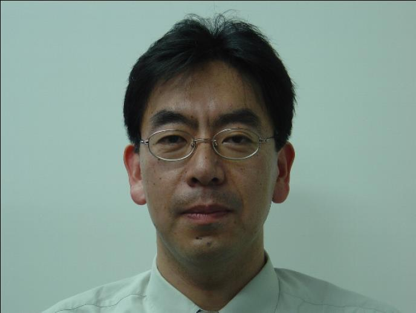
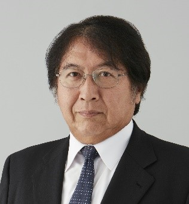
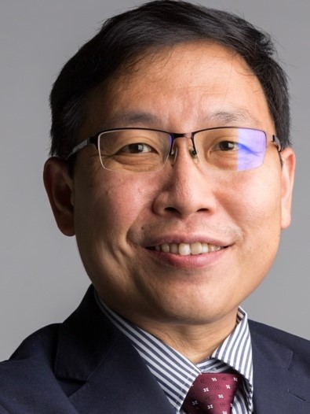

With the wide/rapid spread of distributed systems for information processing, such as cloud computing and social networking, not only transmission but also processing is done on the internet. However, cloud environments have some serious issues for end users, such as unauthorized access, data leaks, and privacy compromise, due to unreliability of providers and some accidents. Accordingly, we first focus on compressible image encryption schemes, which have been proposed for encryption-then-compression (EtC) systems, although the traditional way for secure image transmission is to use a compression-then encryption (CtE) system. EtC systems allow us to close unencrypted images to network providers, because encrypted images can be directly compressed even when the images are multiply recompressed by providers. Next, we address the issue of learnable encryption. Huge training data sets are required for machine learning and deep learning algorithms to obtain high performance. However, it requires large cost to collect enough training data while maintaining people’s privacy.
Biographical Sketch
Hitoshi Kiya received his B.E and M.E. degrees from Nagaoka University of Technology, in 1980 and 1982 respectively, and his Dr. Eng. degree from Tokyo Metropolitan University in 1987. In 1982, he joined Tokyo Metropolitan University, where he became a Full Professor in 2000. From 1995 to 1996, he attended the University of Sydney, Australia as a Visiting Fellow. He is a Fellow of IEEE, IEICE and ITE. He currently serves as President of APSIPA, and he served as Inaugural Vice President (Technical Activities) of APSIPA from 2009 to 2013, and as Regional Director-at-Large for Region 10 of the IEEE Signal Processing Society from 2016 to 2017. He was also President of the IEICE Engineering Sciences Society from 2011 to 2012, and he served there as a Vice President and Editor-in-Chief for IEICE Society Magazine and Society Publications. He was Editorial Board Member of eight journals, including IEEE Trans. on Signal Processing, Image Processing, and Information Forensics and Security, Chair of two technical committees and Member of nine technical committees including APSIPA Image, Video, and Multimedia Technical Committee (TC), and IEEE Information Forensics and Security TC. He has organized a lot of international conferences, in such roles as TPC Chair of IEEE ICASSP 2012 and as General Co-Chair of IEEE ISCAS 2019. He has received numerous awards, including six best paper awards.

Satoru Kurokawa
Abstract
Recent progresses in wireless communication technologies are remarkable for broadband wireless internet and mobile communication systems. First step of 5th generation mobile network uses around 3.7, 4.5 and 28 GHz frequency bands in Japan. Radiated electromagnetic interference (EMI) measurement must be done in the radiated electromagnetic field intensity using broadband antennas up to 18 GHz. To evaluate the antenna characteristics for these frequency bands, we usually use double-ridged guided-horn antennas up to 18 GHz and WR-28 band standard gain horn antennas from 26.5 to 40 GHz as standard antennas. In this talk, we show our proposed free space far field antenna factor measurement method using time domain and pulse compression techniques for EMI broad band antennas. Further, we explain our proposed single antenna calibration method for EMI broad band antennas. Then, we also show our proposed single cut-plane near-field to far-field transform method for base-station antennas. Finally, we explain our developed bi-directional optical-fiber-link transceiver systems that can replace coaxial cables in many measurements.
Biographical Sketch
Satoru Kurokawa received B.E. and M.E. degrees in electrical engineering from Chiba University, Chiba, Japan, in 1987 and 1989, respectively, and a Ph.D. degree from the Department of Communication and Computer Engineering, Kyoto University, Kyoto, Japan, in 2003. He has been working as a senior researcher and a group leader of electromagnetic field standard research group, National Metrology Institute of Japan, National Institute of Advanced Industrial Science and Technology, Ibaraki, Japan, since 2003. He was a general co-chair of 2017 IEEE Conference on Antenna Measurements & Applications (2017 IEEE CAMA). He is an advisory committee member of IEICE photonic applied electromagnetic measurement technical committee. He is an international secretary of IEC TC103. His research interests include antenna metrology, radio over fiber technology for antenna measurement, electromagnetic interference measurement, and time-domain measurements.

Motofumi Matsumura
Abstract
SICE will be 60 years anniversary in 2021. Look back a history of SICE briefly, and talk about a contributions of SICE for Society in Japan from viewpoints of Science and Technologies especially for Industries. And touch to Today’s trends of technologies, especially innovation of control and power electronics application in energy and industry field. And activity of leading technologies of concern in SICE, such as Society 5.0. Future collaboration plan and possibilities with Asian Countries.
Biographical Sketch
He is a President of the society of instrument and control Engineers(SICE) in 2018, an advisor of Fuji Electric Co., ltd. and a Director of METAWATER Co.,ltd. A senior member of IEEJ and a member of CIGRE, IEEE He received his B.S. in electrical and communication engineering from Tohoku University, Sendai, Japan. After joining Fuji Electric, he engaged for engineering of Power Transmission and Distribution. He took a director at energy, control and information Business Group in 2004-2007, an executive managing Director, head of Automation and IT solution business in Energy, Industry and Social field of Fuji Electric Systems Co.,ltd. in 2008-2009. In 2010-2016 Executive Officer at Fuji Electric Co.,ltd, he was responsible for Global and Power Electronics Business as a director. His research concerns Digital Control, protection, monitoring and its system integration in Energy Management field. He was responsible for planning and development of microprocessor based protection and control, digital simulation, renewable energy application, diagnosis technologies of power equipment and etc,. He contributes to standardization as a member of IEC since 1997, to power system committee of the Institute of Electrical Engineers of Japan (IEEJ) in 2002-2008, a director of Foundation Fieldbus and Japan Electric Measuring Instruments Manufacturers' Association (JEMIMA) in 2004-2010, a member and Chair of Power and Industrial systems steering committee of the Japan electrical manufacturer’s association (JEMA) and a Chairman of Japanese Electro-technical Committee (JEC) of IEEJ in 2009-2015.
How we are translating our research work to smart city testbeds? .

Woon-Seng Gan
Abstract
Smart city integrates the internet and information and communication technologies (ICT) to improve the quality of life of its citizens. Monitoring of urban activity becomes an important aspect in smart city platform that automates and activates follow-up actions to improves responses from municipal officers, reduce manpower deployment, and reduce costs. The quality of our urban acoustic is one of the most important conditions for a healthy living environment. There are now several research activities that have been carried out in research labs worldwide to tackle different critical issues in environmental acoustics, such as noise control measures; measuring environmental sound fields; environmental soundscaping; application of state-of-art techniques in virtual acoustics to environmental studies; and automate monitoring sound events. In this talk, I will describe some of the recent works that are being carried out in my lab using acoustic signal processing techniques and artificial Intelligence to help to solve some of the urban acoustic challenges and our deployment of these acoustic systems in smart city testbeds.
Biographical Sketch
Woon-Seng GAN is the Director, Centre for Infocomm Technology (INFINITUS) @ Nanyang Technological University(NTU), Singapore. INFINITUS was formed in 2011 and brings together experts in the area of Information and Communication Engineering. In line with the Singapore Research, Innovation and Enterprise (RIE) 2020 roadmap, the centre now gears itself towards supporting Singapore vision to become a Smart Nation. In particularly, the centre focuses in translating cutting edge technologies into useful and deployable solutions for Smart Mobility, Smart Environment, and Smart Living. Prof Gan is a Fellow of the Audio Engineering Society(AES) and Institute of Engineering and Technology(IET), and a Senior Member of the IEEE. He is also the current Vice President-Institutional Relations and Education Program for the Asia Pacific Signal and Information Processing Application (APSIPA). He has organized several international conferences, which include General Chair of APSIPA 2017, and technical co-Chair of the upcoming IEEE ICASSP 2022 in Singapore. He has published more than 350 international refereed journals and conferences, and has translated his research into 6 granted patents. He had co-authored three books and he is now the Professor of Audio Engineering in NTU.